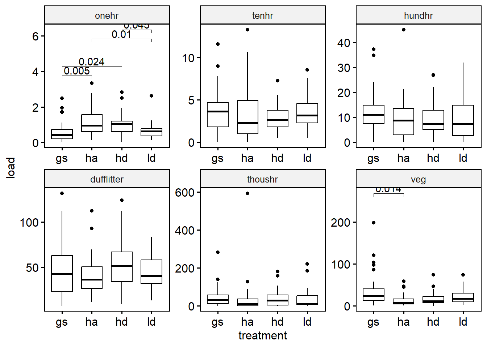
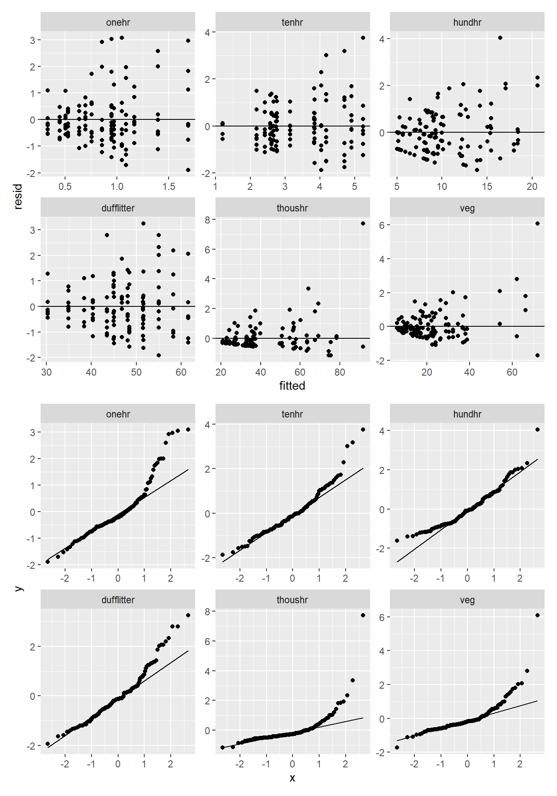
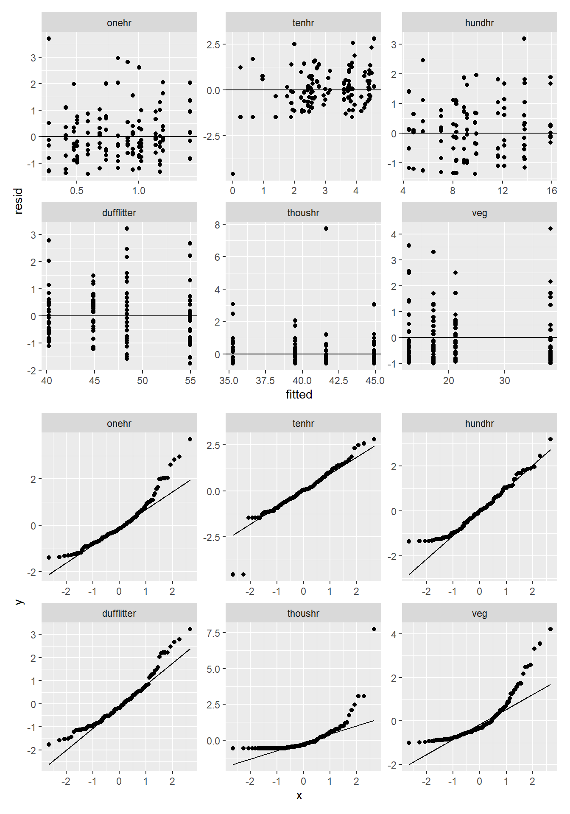
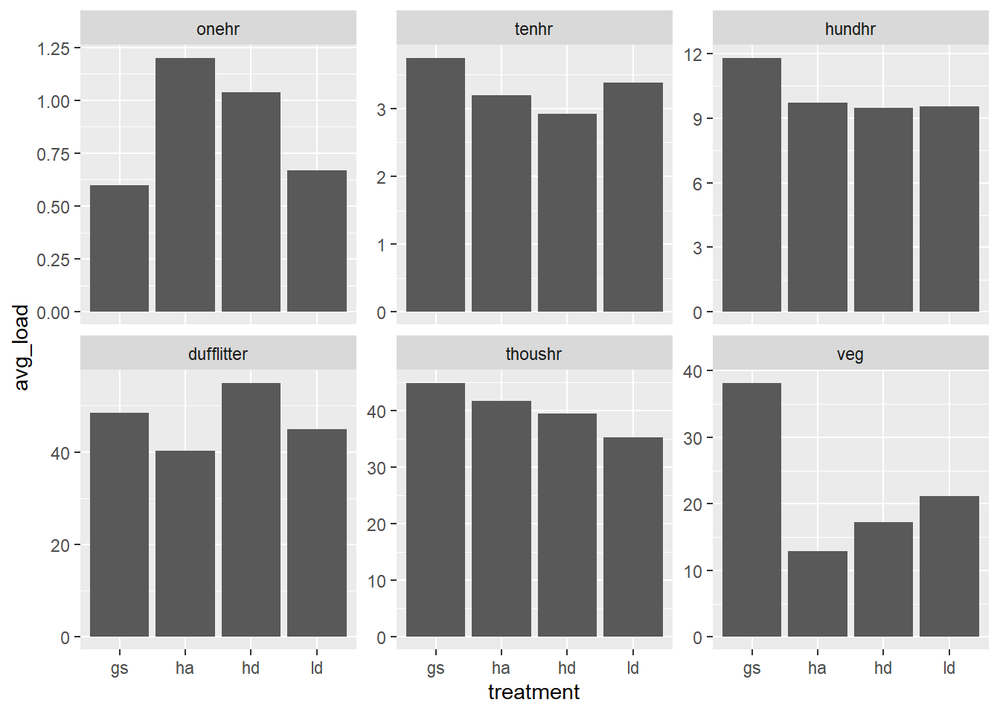
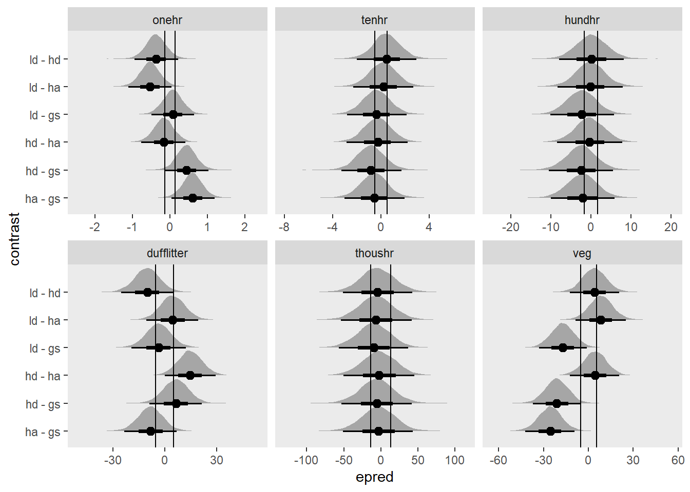

#| echo: false
suppressWarnings(suppressPackageStartupMessages(library(tidyverse)))
load("./data_long.RData")
source("./scripts/utils.r")
transectid <- c("site", "treatment", "corner", "azi")
load_vars <- c("onehr", "tenhr", "hundhr", "dufflitter", "thoushr", "veg")5 Hypothesis testing
5.1 Manova and multiple anovas
The often recommended Pillai’s Trace Test is robust to the normality assumption. Follow up with linear discriminant analysis, or multiple one-way anovas dependidng on research question. Using a Bonferroni correction for rejecting the null of alpha / m, for m hypothesis, we get an alpha of 0.008 for an alpha of 0.05 and 6 tests.
This suggests that it is unlikely that all treatemnts are equal.
tl <- load2("wide", treatment, all_of(load_vars))
myexpr <- expr(cbind(!!!syms(load_vars)) ~ treatment)
test1 <- do.call("manova", list(myexpr, data = quote(tl)))
summary(test1) Df Pillai approx F num Df den Df Pr(>F)
treatment 3 0.35947 2.7454 18 363 0.0001889 ***
Residuals 124
---
Signif. codes: 0 '***' 0.001 '**' 0.01 '*' 0.05 '.' 0.1 ' ' 15.2 Levene test for homogeneity of variance
From the looks of the levene test (using median), onehr, tenhr, and veg may all have different variances between groups.
The one-way anova test results are the same though between equal and unequal variance assumptions. These tests support the notion that we can’t assume that the mean vegetatvie and onehr fuel loading are equal across all treatments, but there isn’t such evidence for the other fuel loading classes.
d <- load2("long", treatment, all_of(load_vars)) |> group_by(class)
d |> nest() |> rowwise() |>
transmute(
levene = car::leveneTest(load ~ factor(treatment), data)[[3]][1],
welch_uneq_var = oneway.test(load ~ treatment, data)$p.value,
welch_eq_var = oneway.test(load ~ treatment, var.equal = TRUE, data = data)$p.value,
) |>
knitr::kable(digits = 3)| class | levene | welch_uneq_var | welch_eq_var |
|---|---|---|---|
| onehr | 0.043 | 0.001 | 0.000 |
| tenhr | 0.020 | 0.491 | 0.596 |
| hundhr | 0.937 | 0.648 | 0.636 |
| dufflitter | 0.118 | 0.152 | 0.136 |
| thoushr | 0.955 | 0.919 | 0.955 |
| veg | 0.006 | 0.010 | 0.001 |
We can use the Games Howell test for pairwise comparisons to follow up on the welches test for differences between means when there is unequal variance among groups. These p-values provide evidence that for onehr fuels, the mean value of ha is greater than gs and ld, and the mean value for hd is also greater than gs and ld. Also, for vegetation, gs is greater than ha only.
gh_test <- d |> rstatix::games_howell_test(load ~ treatment) |>
filter(p.adj.signif != "ns") |>
rstatix::add_y_position(scales = "free", step.increase = 0.5)
ggpubr::ggboxplot(d, x = "treatment", y = "load", facet.by = "class") +
facet_wrap(~class, scales = "free") +
ggpubr::stat_pvalue_manual(gh_test, label = "p.adj")
5.3 Multi-level model
We have transects nested within plot corners, corners nested within plots, and plots nested within sites. We would like to detect a treatment effect, while accounting for the non-independence of this nested data structure. The following model, I believe, captures this grouping structure.
form <- load ~ treatment + (1 | site/treatment/corner)d <- load2("long", site, treatment, corner, all_of(load_vars)) |> group_by(class)
m1 <- d |> nest() |> rowwise() |>
transmute(
mod = list(lme4::lmer(form, data = data)),
emmeans = list(emmeans::emmeans(mod, "treatment")),
pairs = list(as_tibble(pairs(emmeans, infer = TRUE)))
)boundary (singular) fit: see help('isSingular')
boundary (singular) fit: see help('isSingular')
boundary (singular) fit: see help('isSingular')
boundary (singular) fit: see help('isSingular')Pairwise comparisons with Tukey adjustment for each of 6 multilevel models representing different fuel loading classes reveals that the only evidence for differences in means among treatments is with vegetation between the gs and ha treatments. Another sizeable difference in means is between gs and ha for the onehr fuels (Figure 5.1).
#| label: tbl-multilevel-p-values
#| tbl-cap: Pairwise comparisons among treatments with p-values < 0.05 for 6
#| multilevel models.
select(m1, pairs) |> unnest(pairs) |>
filter(p.value <= 0.05) |>
knitr::kable(digits = 3)Adding missing grouping variables: `class`| class | contrast | estimate | SE | df | lower.CL | upper.CL | t.ratio | p.value |
|---|---|---|---|---|---|---|---|---|
| veg | gs - ha | 25.31 | 6.879 | 9 | 3.835 | 46.786 | 3.679 | 0.022 |
group_map(m1, ~ plot(.x$emmeans[[1]], comparisons = TRUE) + ggtitle(.x$class)) |>
patchwork::wrap_plots()
Hypothesis testing with multi-level models is not as straight forward with multi-level models. The problem, explained here is two fold. For GLMMs and unbalanced experimental designs, the null distribution for the F-statistic may not be F-distributed.
For us, we have a balanced design (I think) and so the F-statistic should be F distributed and degrees of freedom should be clear from the details of the design. Because of our balanced design, the Kenward-Rogers approach and “inner-outer” design approach (which is used by nlme::lme) give the same result of 9.
Using the package pbkrtest we can get parametric bootstrap liklihood ratio statistics and test this statistic in a number of different ways. The PBtest should probably be the most reliable, but I’ve included descriptions of the others from the package documentation for reference. I’m also including an F-test in which degrees of freedom are estimated with Kenward-Rogers approach.
- LRT
- Assuming that LRT has a chi-square distribution.
- PBtest
- The fraction of simulated LRT-values that are larger or equal to the observed LRT value.
- Bartlett
- A Bartlett correction is of LRT is calculated from the mean of the simulated LRT-values
- Gamma
- The reference distribution of LRT is assumed to be a gamma distribution with mean and variance determined as the sample mean and sample variance of the simulated LRT-values.
- F
- The LRT divided by the number of degrees of freedom is assumed to be F-distributed, where the denominator degrees of freedom are determined by matching the first moment of the reference distribution.
d <- load2("long", all_of(c(transectid, load_vars)))
dd <- ungroup(d) |> split(~class)
cluster <- parallel::makeCluster(rep("localhost", parallel::detectCores()))
pmod <- imap(dd, function(d, i) {
form <- load ~ treatment + (1 | site/treatment/corner)
amod <- lme4::lmer(form, d, REML = FALSE)
nmod <- update(amod, . ~ . -treatment)
krtest <- pbkrtest::KRmodcomp(amod, nmod) |>
pluck("test", \(x) slice(x, 1)) |>
rename(df = ndf) |>
rownames_to_column("test")
pbkrtest::PBmodcomp(amod, nmod, cl = cluster) |>
pluck(summary, "test") |>
rownames_to_column("test") |>
bind_rows(krtest) |>
mutate(class = i, .before = 1) |>
relocate(c(df, ddf, F.scaling), .after = stat)
}) |>
list_rbind()boundary (singular) fit: see help('isSingular')
boundary (singular) fit: see help('isSingular')
boundary (singular) fit: see help('isSingular')Warning in checkConv(attr(opt, "derivs"), opt$par, ctrl = control$checkConv, :
Model failed to converge with max|grad| = 0.00495147 (tol = 0.002, component 1)Warning in checkConv(attr(opt, "derivs"), opt$par, ctrl = control$checkConv, :
Model failed to converge with max|grad| = 0.0080954 (tol = 0.002, component 1)Warning in checkConv(attr(opt, "derivs"), opt$par, ctrl = control$checkConv, :
Model failed to converge with max|grad| = 0.00293406 (tol = 0.002, component 1)Warning in checkConv(attr(opt, "derivs"), opt$par, ctrl = control$checkConv, :
Model failed to converge with max|grad| = 0.00867791 (tol = 0.002, component 1)Warning in checkConv(attr(opt, "derivs"), opt$par, ctrl = control$checkConv, :
Model failed to converge with max|grad| = 0.00287386 (tol = 0.002, component 1)Warning in checkConv(attr(opt, "derivs"), opt$par, ctrl = control$checkConv, :
Model failed to converge with max|grad| = 0.00232741 (tol = 0.002, component 1)Warning in checkConv(attr(opt, "derivs"), opt$par, ctrl = control$checkConv, :
unable to evaluate scaled gradientWarning in checkConv(attr(opt, "derivs"), opt$par, ctrl = control$checkConv, :
Model failed to converge: degenerate Hessian with 1 negative eigenvaluesWarning in checkConv(attr(opt, "derivs"), opt$par, ctrl = control$checkConv, :
unable to evaluate scaled gradientWarning in checkConv(attr(opt, "derivs"), opt$par, ctrl = control$checkConv, :
Model failed to converge: degenerate Hessian with 1 negative eigenvaluesWarning in checkConv(attr(opt, "derivs"), opt$par, ctrl = control$checkConv, :
Model failed to converge with max|grad| = 0.00345074 (tol = 0.002, component 1)boundary (singular) fit: see help('isSingular')
boundary (singular) fit: see help('isSingular')
boundary (singular) fit: see help('isSingular')
boundary (singular) fit: see help('isSingular')
boundary (singular) fit: see help('isSingular')
boundary (singular) fit: see help('isSingular')
boundary (singular) fit: see help('isSingular')Warning in checkConv(attr(opt, "derivs"), opt$par, ctrl = control$checkConv, :
unable to evaluate scaled gradientWarning in checkConv(attr(opt, "derivs"), opt$par, ctrl = control$checkConv, :
Model failed to converge: degenerate Hessian with 1 negative eigenvaluesWarning in checkConv(attr(opt, "derivs"), opt$par, ctrl = control$checkConv, :
unable to evaluate scaled gradientWarning in checkConv(attr(opt, "derivs"), opt$par, ctrl = control$checkConv, :
Model failed to converge: degenerate Hessian with 1 negative eigenvaluesWarning in checkConv(attr(opt, "derivs"), opt$par, ctrl = control$checkConv, :
unable to evaluate scaled gradientWarning in checkConv(attr(opt, "derivs"), opt$par, ctrl = control$checkConv, :
Model failed to converge: degenerate Hessian with 1 negative eigenvaluesWarning in checkConv(attr(opt, "derivs"), opt$par, ctrl = control$checkConv, :
Model failed to converge with max|grad| = 0.00206602 (tol = 0.002, component 1)Warning in checkConv(attr(opt, "derivs"), opt$par, ctrl = control$checkConv, :
unable to evaluate scaled gradientWarning in checkConv(attr(opt, "derivs"), opt$par, ctrl = control$checkConv, :
Model failed to converge: degenerate Hessian with 1 negative eigenvaluesWarning in checkConv(attr(opt, "derivs"), opt$par, ctrl = control$checkConv, :
unable to evaluate scaled gradientWarning in checkConv(attr(opt, "derivs"), opt$par, ctrl = control$checkConv, :
Model failed to converge: degenerate Hessian with 1 negative eigenvaluesWarning in checkConv(attr(opt, "derivs"), opt$par, ctrl = control$checkConv, :
unable to evaluate scaled gradientWarning in checkConv(attr(opt, "derivs"), opt$par, ctrl = control$checkConv, :
Model failed to converge: degenerate Hessian with 1 negative eigenvaluesWarning in checkConv(attr(opt, "derivs"), opt$par, ctrl = control$checkConv, :
unable to evaluate scaled gradientWarning in checkConv(attr(opt, "derivs"), opt$par, ctrl = control$checkConv, :
Model failed to converge: degenerate Hessian with 1 negative eigenvaluesWarning in checkConv(attr(opt, "derivs"), opt$par, ctrl = control$checkConv, :
unable to evaluate scaled gradientWarning in checkConv(attr(opt, "derivs"), opt$par, ctrl = control$checkConv, :
Model failed to converge: degenerate Hessian with 1 negative eigenvaluesWarning in checkConv(attr(opt, "derivs"), opt$par, ctrl = control$checkConv, :
unable to evaluate scaled gradientWarning in checkConv(attr(opt, "derivs"), opt$par, ctrl = control$checkConv, :
Model failed to converge: degenerate Hessian with 1 negative eigenvaluesWarning in checkConv(attr(opt, "derivs"), opt$par, ctrl = control$checkConv, :
unable to evaluate scaled gradientWarning in checkConv(attr(opt, "derivs"), opt$par, ctrl = control$checkConv, :
Model failed to converge: degenerate Hessian with 1 negative eigenvaluesWarning in checkConv(attr(opt, "derivs"), opt$par, ctrl = control$checkConv, :
unable to evaluate scaled gradientWarning in checkConv(attr(opt, "derivs"), opt$par, ctrl = control$checkConv, :
Model failed to converge: degenerate Hessian with 1 negative eigenvaluesWarning in checkConv(attr(opt, "derivs"), opt$par, ctrl = control$checkConv, :
unable to evaluate scaled gradientWarning in checkConv(attr(opt, "derivs"), opt$par, ctrl = control$checkConv, :
Model failed to converge: degenerate Hessian with 1 negative eigenvaluesWarning in checkConv(attr(opt, "derivs"), opt$par, ctrl = control$checkConv, :
unable to evaluate scaled gradientWarning in checkConv(attr(opt, "derivs"), opt$par, ctrl = control$checkConv, :
Model failed to converge: degenerate Hessian with 1 negative eigenvaluesWarning in checkConv(attr(opt, "derivs"), opt$par, ctrl = control$checkConv, :
unable to evaluate scaled gradientWarning in checkConv(attr(opt, "derivs"), opt$par, ctrl = control$checkConv, :
Model failed to converge: degenerate Hessian with 1 negative eigenvaluesWarning in checkConv(attr(opt, "derivs"), opt$par, ctrl = control$checkConv, :
unable to evaluate scaled gradientWarning in checkConv(attr(opt, "derivs"), opt$par, ctrl = control$checkConv, :
Model failed to converge: degenerate Hessian with 1 negative eigenvaluesWarning in checkConv(attr(opt, "derivs"), opt$par, ctrl = control$checkConv, :
unable to evaluate scaled gradientWarning in checkConv(attr(opt, "derivs"), opt$par, ctrl = control$checkConv, :
Model failed to converge: degenerate Hessian with 1 negative eigenvaluesWarning in checkConv(attr(opt, "derivs"), opt$par, ctrl = control$checkConv, :
unable to evaluate scaled gradientWarning in checkConv(attr(opt, "derivs"), opt$par, ctrl = control$checkConv, :
Model failed to converge: degenerate Hessian with 1 negative eigenvaluesWarning in checkConv(attr(opt, "derivs"), opt$par, ctrl = control$checkConv, :
unable to evaluate scaled gradientWarning in checkConv(attr(opt, "derivs"), opt$par, ctrl = control$checkConv, :
Model failed to converge: degenerate Hessian with 1 negative eigenvaluesWarning in checkConv(attr(opt, "derivs"), opt$par, ctrl = control$checkConv, :
unable to evaluate scaled gradientWarning in checkConv(attr(opt, "derivs"), opt$par, ctrl = control$checkConv, :
Model failed to converge: degenerate Hessian with 1 negative eigenvaluesWarning in checkConv(attr(opt, "derivs"), opt$par, ctrl = control$checkConv, :
unable to evaluate scaled gradientWarning in checkConv(attr(opt, "derivs"), opt$par, ctrl = control$checkConv, :
Model failed to converge: degenerate Hessian with 1 negative eigenvaluesWarning in checkConv(attr(opt, "derivs"), opt$par, ctrl = control$checkConv, :
unable to evaluate scaled gradientWarning in checkConv(attr(opt, "derivs"), opt$par, ctrl = control$checkConv, :
Model failed to converge: degenerate Hessian with 1 negative eigenvaluesWarning in checkConv(attr(opt, "derivs"), opt$par, ctrl = control$checkConv, :
unable to evaluate scaled gradientWarning in checkConv(attr(opt, "derivs"), opt$par, ctrl = control$checkConv, :
Model failed to converge: degenerate Hessian with 1 negative eigenvaluesWarning in checkConv(attr(opt, "derivs"), opt$par, ctrl = control$checkConv, :
unable to evaluate scaled gradientWarning in checkConv(attr(opt, "derivs"), opt$par, ctrl = control$checkConv, :
Model failed to converge: degenerate Hessian with 1 negative eigenvaluesWarning in checkConv(attr(opt, "derivs"), opt$par, ctrl = control$checkConv, :
unable to evaluate scaled gradientWarning in checkConv(attr(opt, "derivs"), opt$par, ctrl = control$checkConv, :
Model failed to converge: degenerate Hessian with 1 negative eigenvaluesWarning in checkConv(attr(opt, "derivs"), opt$par, ctrl = control$checkConv, :
unable to evaluate scaled gradientWarning in checkConv(attr(opt, "derivs"), opt$par, ctrl = control$checkConv, :
Model failed to converge: degenerate Hessian with 1 negative eigenvaluesWarning in checkConv(attr(opt, "derivs"), opt$par, ctrl = control$checkConv, :
unable to evaluate scaled gradientWarning in checkConv(attr(opt, "derivs"), opt$par, ctrl = control$checkConv, :
Model failed to converge: degenerate Hessian with 1 negative eigenvaluesWarning in checkConv(attr(opt, "derivs"), opt$par, ctrl = control$checkConv, :
unable to evaluate scaled gradientWarning in checkConv(attr(opt, "derivs"), opt$par, ctrl = control$checkConv, :
Model failed to converge: degenerate Hessian with 1 negative eigenvaluesWarning in checkConv(attr(opt, "derivs"), opt$par, ctrl = control$checkConv, :
unable to evaluate scaled gradientWarning in checkConv(attr(opt, "derivs"), opt$par, ctrl = control$checkConv, :
Model failed to converge: degenerate Hessian with 1 negative eigenvaluesWarning in checkConv(attr(opt, "derivs"), opt$par, ctrl = control$checkConv, :
unable to evaluate scaled gradientWarning in checkConv(attr(opt, "derivs"), opt$par, ctrl = control$checkConv, :
Model failed to converge: degenerate Hessian with 1 negative eigenvaluesWarning in checkConv(attr(opt, "derivs"), opt$par, ctrl = control$checkConv, :
unable to evaluate scaled gradientWarning in checkConv(attr(opt, "derivs"), opt$par, ctrl = control$checkConv, :
Model failed to converge: degenerate Hessian with 2 negative eigenvaluesWarning in checkConv(attr(opt, "derivs"), opt$par, ctrl = control$checkConv, :
unable to evaluate scaled gradientWarning in checkConv(attr(opt, "derivs"), opt$par, ctrl = control$checkConv, :
Model failed to converge: degenerate Hessian with 1 negative eigenvaluesWarning in checkConv(attr(opt, "derivs"), opt$par, ctrl = control$checkConv, :
unable to evaluate scaled gradientWarning in checkConv(attr(opt, "derivs"), opt$par, ctrl = control$checkConv, :
Model failed to converge: degenerate Hessian with 1 negative eigenvaluesboundary (singular) fit: see help('isSingular')
boundary (singular) fit: see help('isSingular')
boundary (singular) fit: see help('isSingular')
boundary (singular) fit: see help('isSingular')Warning in checkConv(attr(opt, "derivs"), opt$par, ctrl = control$checkConv, :
Model failed to converge with max|grad| = 0.00438076 (tol = 0.002, component 1)Warning in checkConv(attr(opt, "derivs"), opt$par, ctrl = control$checkConv, :
unable to evaluate scaled gradientWarning in checkConv(attr(opt, "derivs"), opt$par, ctrl = control$checkConv, :
Model failed to converge: degenerate Hessian with 1 negative eigenvaluesWarning in checkConv(attr(opt, "derivs"), opt$par, ctrl = control$checkConv, :
unable to evaluate scaled gradientWarning in checkConv(attr(opt, "derivs"), opt$par, ctrl = control$checkConv, :
Model failed to converge: degenerate Hessian with 1 negative eigenvaluesWarning in checkConv(attr(opt, "derivs"), opt$par, ctrl = control$checkConv, :
Model failed to converge with max|grad| = 0.00720552 (tol = 0.002, component 1)Warning in checkConv(attr(opt, "derivs"), opt$par, ctrl = control$checkConv, :
unable to evaluate scaled gradientWarning in checkConv(attr(opt, "derivs"), opt$par, ctrl = control$checkConv, :
Model failed to converge: degenerate Hessian with 1 negative eigenvaluesWarning in checkConv(attr(opt, "derivs"), opt$par, ctrl = control$checkConv, :
unable to evaluate scaled gradientWarning in checkConv(attr(opt, "derivs"), opt$par, ctrl = control$checkConv, :
Model failed to converge: degenerate Hessian with 1 negative eigenvaluesWarning in checkConv(attr(opt, "derivs"), opt$par, ctrl = control$checkConv, :
Model failed to converge with max|grad| = 0.00318385 (tol = 0.002, component 1)Warning in checkConv(attr(opt, "derivs"), opt$par, ctrl = control$checkConv, :
Model failed to converge with max|grad| = 0.0224225 (tol = 0.002, component 1)Warning in checkConv(attr(opt, "derivs"), opt$par, ctrl = control$checkConv, :
Model failed to converge with max|grad| = 0.0116252 (tol = 0.002, component 1)Warning in checkConv(attr(opt, "derivs"), opt$par, ctrl = control$checkConv, :
Model failed to converge with max|grad| = 0.00321524 (tol = 0.002, component 1)Warning in checkConv(attr(opt, "derivs"), opt$par, ctrl = control$checkConv, :
Model failed to converge with max|grad| = 0.00474854 (tol = 0.002, component 1)Warning in checkConv(attr(opt, "derivs"), opt$par, ctrl = control$checkConv, :
Model failed to converge with max|grad| = 0.00342931 (tol = 0.002, component 1)Warning in checkConv(attr(opt, "derivs"), opt$par, ctrl = control$checkConv, :
Model failed to converge with max|grad| = 0.0022288 (tol = 0.002, component 1)boundary (singular) fit: see help('isSingular')
boundary (singular) fit: see help('isSingular')Warning in checkConv(attr(opt, "derivs"), opt$par, ctrl = control$checkConv, :
Model failed to converge with max|grad| = 0.00989969 (tol = 0.002, component 1)Warning in checkConv(attr(opt, "derivs"), opt$par, ctrl = control$checkConv, :
Model failed to converge with max|grad| = 0.0144391 (tol = 0.002, component 1)Warning in checkConv(attr(opt, "derivs"), opt$par, ctrl = control$checkConv, :
Model failed to converge with max|grad| = 0.00861051 (tol = 0.002, component 1)Warning in checkConv(attr(opt, "derivs"), opt$par, ctrl = control$checkConv, :
Model failed to converge with max|grad| = 0.00376918 (tol = 0.002, component 1)Warning in checkConv(attr(opt, "derivs"), opt$par, ctrl = control$checkConv, :
Model failed to converge with max|grad| = 0.011751 (tol = 0.002, component 1)Warning in checkConv(attr(opt, "derivs"), opt$par, ctrl = control$checkConv, :
Model failed to converge with max|grad| = 0.0136347 (tol = 0.002, component 1)Warning in checkConv(attr(opt, "derivs"), opt$par, ctrl = control$checkConv, :
unable to evaluate scaled gradientWarning in checkConv(attr(opt, "derivs"), opt$par, ctrl = control$checkConv, :
Model failed to converge: degenerate Hessian with 1 negative eigenvaluesWarning in checkConv(attr(opt, "derivs"), opt$par, ctrl = control$checkConv, :
Model failed to converge with max|grad| = 0.00685404 (tol = 0.002, component 1)Warning in checkConv(attr(opt, "derivs"), opt$par, ctrl = control$checkConv, :
Model failed to converge with max|grad| = 0.00392173 (tol = 0.002, component 1)Warning in checkConv(attr(opt, "derivs"), opt$par, ctrl = control$checkConv, :
Model failed to converge with max|grad| = 0.012615 (tol = 0.002, component 1)Warning in checkConv(attr(opt, "derivs"), opt$par, ctrl = control$checkConv, :
unable to evaluate scaled gradientWarning in checkConv(attr(opt, "derivs"), opt$par, ctrl = control$checkConv, :
Model failed to converge: degenerate Hessian with 1 negative eigenvaluesWarning in checkConv(attr(opt, "derivs"), opt$par, ctrl = control$checkConv, :
Model failed to converge with max|grad| = 0.00768586 (tol = 0.002, component 1)Warning in checkConv(attr(opt, "derivs"), opt$par, ctrl = control$checkConv, :
unable to evaluate scaled gradientWarning in checkConv(attr(opt, "derivs"), opt$par, ctrl = control$checkConv, :
Model failed to converge: degenerate Hessian with 1 negative eigenvaluesWarning in checkConv(attr(opt, "derivs"), opt$par, ctrl = control$checkConv, :
unable to evaluate scaled gradientWarning in checkConv(attr(opt, "derivs"), opt$par, ctrl = control$checkConv, :
Model failed to converge: degenerate Hessian with 1 negative eigenvaluesWarning in checkConv(attr(opt, "derivs"), opt$par, ctrl = control$checkConv, :
Model failed to converge with max|grad| = 0.014179 (tol = 0.002, component 1)Warning in checkConv(attr(opt, "derivs"), opt$par, ctrl = control$checkConv, :
unable to evaluate scaled gradientWarning in checkConv(attr(opt, "derivs"), opt$par, ctrl = control$checkConv, :
Model failed to converge: degenerate Hessian with 1 negative eigenvaluesWarning in checkConv(attr(opt, "derivs"), opt$par, ctrl = control$checkConv, :
Model failed to converge with max|grad| = 0.00844147 (tol = 0.002, component 1)Warning in checkConv(attr(opt, "derivs"), opt$par, ctrl = control$checkConv, :
Model failed to converge with max|grad| = 0.0149816 (tol = 0.002, component 1)Warning in checkConv(attr(opt, "derivs"), opt$par, ctrl = control$checkConv, :
Model failed to converge with max|grad| = 0.033259 (tol = 0.002, component 1)Warning in checkConv(attr(opt, "derivs"), opt$par, ctrl = control$checkConv, :
Model failed to converge with max|grad| = 0.00244724 (tol = 0.002, component 1)Warning in checkConv(attr(opt, "derivs"), opt$par, ctrl = control$checkConv, :
Model failed to converge with max|grad| = 0.00959561 (tol = 0.002, component 1)Warning in checkConv(attr(opt, "derivs"), opt$par, ctrl = control$checkConv, :
Model failed to converge with max|grad| = 0.0277217 (tol = 0.002, component 1)Warning in checkConv(attr(opt, "derivs"), opt$par, ctrl = control$checkConv, :
Model failed to converge with max|grad| = 0.0148498 (tol = 0.002, component 1)Warning in checkConv(attr(opt, "derivs"), opt$par, ctrl = control$checkConv, :
Model failed to converge with max|grad| = 0.0160008 (tol = 0.002, component 1)Warning in checkConv(attr(opt, "derivs"), opt$par, ctrl = control$checkConv, :
Model failed to converge with max|grad| = 0.0125547 (tol = 0.002, component 1)Warning in checkConv(attr(opt, "derivs"), opt$par, ctrl = control$checkConv, :
unable to evaluate scaled gradientWarning in checkConv(attr(opt, "derivs"), opt$par, ctrl = control$checkConv, :
Model failed to converge: degenerate Hessian with 1 negative eigenvaluesWarning in checkConv(attr(opt, "derivs"), opt$par, ctrl = control$checkConv, :
Model failed to converge with max|grad| = 0.00535301 (tol = 0.002, component 1)Warning in checkConv(attr(opt, "derivs"), opt$par, ctrl = control$checkConv, :
unable to evaluate scaled gradientWarning in checkConv(attr(opt, "derivs"), opt$par, ctrl = control$checkConv, :
Model failed to converge: degenerate Hessian with 1 negative eigenvaluesWarning in checkConv(attr(opt, "derivs"), opt$par, ctrl = control$checkConv, :
Model failed to converge with max|grad| = 0.0115373 (tol = 0.002, component 1)Warning in checkConv(attr(opt, "derivs"), opt$par, ctrl = control$checkConv, :
unable to evaluate scaled gradientWarning in checkConv(attr(opt, "derivs"), opt$par, ctrl = control$checkConv, :
Model failed to converge: degenerate Hessian with 1 negative eigenvaluesWarning in checkConv(attr(opt, "derivs"), opt$par, ctrl = control$checkConv, :
unable to evaluate scaled gradientWarning in checkConv(attr(opt, "derivs"), opt$par, ctrl = control$checkConv, :
Model failed to converge: degenerate Hessian with 1 negative eigenvaluesWarning in checkConv(attr(opt, "derivs"), opt$par, ctrl = control$checkConv, :
unable to evaluate scaled gradientWarning in checkConv(attr(opt, "derivs"), opt$par, ctrl = control$checkConv, :
Model failed to converge: degenerate Hessian with 1 negative eigenvaluesWarning in checkConv(attr(opt, "derivs"), opt$par, ctrl = control$checkConv, :
unable to evaluate scaled gradientWarning in checkConv(attr(opt, "derivs"), opt$par, ctrl = control$checkConv, :
Model failed to converge: degenerate Hessian with 1 negative eigenvaluesWarning in checkConv(attr(opt, "derivs"), opt$par, ctrl = control$checkConv, :
unable to evaluate scaled gradientWarning in checkConv(attr(opt, "derivs"), opt$par, ctrl = control$checkConv, :
Model failed to converge: degenerate Hessian with 1 negative eigenvaluesWarning in checkConv(attr(opt, "derivs"), opt$par, ctrl = control$checkConv, :
unable to evaluate scaled gradientWarning in checkConv(attr(opt, "derivs"), opt$par, ctrl = control$checkConv, :
Model failed to converge: degenerate Hessian with 1 negative eigenvaluesWarning in checkConv(attr(opt, "derivs"), opt$par, ctrl = control$checkConv, :
unable to evaluate scaled gradientWarning in checkConv(attr(opt, "derivs"), opt$par, ctrl = control$checkConv, :
Model failed to converge: degenerate Hessian with 1 negative eigenvaluesWarning in checkConv(attr(opt, "derivs"), opt$par, ctrl = control$checkConv, :
Model failed to converge with max|grad| = 0.0132483 (tol = 0.002, component 1)Warning in checkConv(attr(opt, "derivs"), opt$par, ctrl = control$checkConv, :
unable to evaluate scaled gradientWarning in checkConv(attr(opt, "derivs"), opt$par, ctrl = control$checkConv, :
Model failed to converge: degenerate Hessian with 1 negative eigenvaluesWarning in checkConv(attr(opt, "derivs"), opt$par, ctrl = control$checkConv, :
Model failed to converge with max|grad| = 0.0111835 (tol = 0.002, component 1)Warning in checkConv(attr(opt, "derivs"), opt$par, ctrl = control$checkConv, :
Model failed to converge with max|grad| = 0.0102408 (tol = 0.002, component 1)Warning in checkConv(attr(opt, "derivs"), opt$par, ctrl = control$checkConv, :
Model failed to converge with max|grad| = 0.00250671 (tol = 0.002, component 1)Warning in checkConv(attr(opt, "derivs"), opt$par, ctrl = control$checkConv, :
Model failed to converge with max|grad| = 0.0219976 (tol = 0.002, component 1)Warning in checkConv(attr(opt, "derivs"), opt$par, ctrl = control$checkConv, :
unable to evaluate scaled gradientWarning in checkConv(attr(opt, "derivs"), opt$par, ctrl = control$checkConv, :
Model failed to converge: degenerate Hessian with 1 negative eigenvaluesWarning in checkConv(attr(opt, "derivs"), opt$par, ctrl = control$checkConv, :
Model failed to converge with max|grad| = 0.00654607 (tol = 0.002, component 1)Warning in checkConv(attr(opt, "derivs"), opt$par, ctrl = control$checkConv, :
Model failed to converge with max|grad| = 0.0257068 (tol = 0.002, component 1)Warning in checkConv(attr(opt, "derivs"), opt$par, ctrl = control$checkConv, :
Model failed to converge with max|grad| = 0.0068959 (tol = 0.002, component 1)Warning in checkConv(attr(opt, "derivs"), opt$par, ctrl = control$checkConv, :
unable to evaluate scaled gradientWarning in checkConv(attr(opt, "derivs"), opt$par, ctrl = control$checkConv, :
Model failed to converge: degenerate Hessian with 1 negative eigenvaluesWarning in checkConv(attr(opt, "derivs"), opt$par, ctrl = control$checkConv, :
Model failed to converge with max|grad| = 0.00278886 (tol = 0.002, component 1)Warning in checkConv(attr(opt, "derivs"), opt$par, ctrl = control$checkConv, :
Model failed to converge with max|grad| = 0.00792546 (tol = 0.002, component 1)Warning in checkConv(attr(opt, "derivs"), opt$par, ctrl = control$checkConv, :
Model failed to converge with max|grad| = 0.476556 (tol = 0.002, component 1)Warning in checkConv(attr(opt, "derivs"), opt$par, ctrl = control$checkConv, :
unable to evaluate scaled gradientWarning in checkConv(attr(opt, "derivs"), opt$par, ctrl = control$checkConv, :
Model failed to converge: degenerate Hessian with 1 negative eigenvaluesWarning in checkConv(attr(opt, "derivs"), opt$par, ctrl = control$checkConv, :
unable to evaluate scaled gradientWarning in checkConv(attr(opt, "derivs"), opt$par, ctrl = control$checkConv, :
Model failed to converge: degenerate Hessian with 1 negative eigenvaluesWarning in checkConv(attr(opt, "derivs"), opt$par, ctrl = control$checkConv, :
Model failed to converge with max|grad| = 0.00302266 (tol = 0.002, component 1)Warning in checkConv(attr(opt, "derivs"), opt$par, ctrl = control$checkConv, :
Model failed to converge with max|grad| = 0.00605336 (tol = 0.002, component 1)Warning in checkConv(attr(opt, "derivs"), opt$par, ctrl = control$checkConv, :
Model failed to converge with max|grad| = 0.00278294 (tol = 0.002, component 1)Warning in checkConv(attr(opt, "derivs"), opt$par, ctrl = control$checkConv, :
Model failed to converge with max|grad| = 0.00538351 (tol = 0.002, component 1)Warning in checkConv(attr(opt, "derivs"), opt$par, ctrl = control$checkConv, :
unable to evaluate scaled gradientWarning in checkConv(attr(opt, "derivs"), opt$par, ctrl = control$checkConv, :
Model failed to converge: degenerate Hessian with 1 negative eigenvaluesWarning in checkConv(attr(opt, "derivs"), opt$par, ctrl = control$checkConv, :
unable to evaluate scaled gradientWarning in checkConv(attr(opt, "derivs"), opt$par, ctrl = control$checkConv, :
Model failed to converge: degenerate Hessian with 1 negative eigenvaluesWarning in checkConv(attr(opt, "derivs"), opt$par, ctrl = control$checkConv, :
unable to evaluate scaled gradientWarning in checkConv(attr(opt, "derivs"), opt$par, ctrl = control$checkConv, :
Model failed to converge: degenerate Hessian with 1 negative eigenvaluesWarning in checkConv(attr(opt, "derivs"), opt$par, ctrl = control$checkConv, :
Model failed to converge with max|grad| = 0.00433449 (tol = 0.002, component 1)Warning in checkConv(attr(opt, "derivs"), opt$par, ctrl = control$checkConv, :
Model failed to converge with max|grad| = 0.00744688 (tol = 0.002, component 1)Warning in checkConv(attr(opt, "derivs"), opt$par, ctrl = control$checkConv, :
unable to evaluate scaled gradientWarning in checkConv(attr(opt, "derivs"), opt$par, ctrl = control$checkConv, :
Model failed to converge: degenerate Hessian with 1 negative eigenvaluesWarning in checkConv(attr(opt, "derivs"), opt$par, ctrl = control$checkConv, :
unable to evaluate scaled gradientWarning in checkConv(attr(opt, "derivs"), opt$par, ctrl = control$checkConv, :
Model failed to converge: degenerate Hessian with 1 negative eigenvaluesWarning in checkConv(attr(opt, "derivs"), opt$par, ctrl = control$checkConv, :
unable to evaluate scaled gradientWarning in checkConv(attr(opt, "derivs"), opt$par, ctrl = control$checkConv, :
Model failed to converge: degenerate Hessian with 1 negative eigenvaluesWarning in checkConv(attr(opt, "derivs"), opt$par, ctrl = control$checkConv, :
Model failed to converge with max|grad| = 0.0337204 (tol = 0.002, component 1)Warning in checkConv(attr(opt, "derivs"), opt$par, ctrl = control$checkConv, :
Model failed to converge with max|grad| = 0.00689951 (tol = 0.002, component 1)Warning in checkConv(attr(opt, "derivs"), opt$par, ctrl = control$checkConv, :
unable to evaluate scaled gradientWarning in checkConv(attr(opt, "derivs"), opt$par, ctrl = control$checkConv, :
Model failed to converge: degenerate Hessian with 1 negative eigenvaluesWarning in checkConv(attr(opt, "derivs"), opt$par, ctrl = control$checkConv, :
unable to evaluate scaled gradientWarning in checkConv(attr(opt, "derivs"), opt$par, ctrl = control$checkConv, :
Model failed to converge: degenerate Hessian with 1 negative eigenvaluesWarning in checkConv(attr(opt, "derivs"), opt$par, ctrl = control$checkConv, :
Model failed to converge with max|grad| = 0.0256263 (tol = 0.002, component 1)Warning in checkConv(attr(opt, "derivs"), opt$par, ctrl = control$checkConv, :
Model failed to converge with max|grad| = 0.0229738 (tol = 0.002, component 1)Warning in checkConv(attr(opt, "derivs"), opt$par, ctrl = control$checkConv, :
unable to evaluate scaled gradientWarning in checkConv(attr(opt, "derivs"), opt$par, ctrl = control$checkConv, :
Model failed to converge: degenerate Hessian with 1 negative eigenvaluesWarning in checkConv(attr(opt, "derivs"), opt$par, ctrl = control$checkConv, :
Model failed to converge with max|grad| = 0.00354673 (tol = 0.002, component 1)Warning in checkConv(attr(opt, "derivs"), opt$par, ctrl = control$checkConv, :
Model failed to converge with max|grad| = 0.0030361 (tol = 0.002, component 1)Warning in checkConv(attr(opt, "derivs"), opt$par, ctrl = control$checkConv, :
Model failed to converge with max|grad| = 0.00246125 (tol = 0.002, component 1)Warning in checkConv(attr(opt, "derivs"), opt$par, ctrl = control$checkConv, :
Model failed to converge with max|grad| = 0.0655702 (tol = 0.002, component 1)Warning in checkConv(attr(opt, "derivs"), opt$par, ctrl = control$checkConv, :
Model failed to converge with max|grad| = 0.015643 (tol = 0.002, component 1)Warning in checkConv(attr(opt, "derivs"), opt$par, ctrl = control$checkConv, :
Model failed to converge with max|grad| = 0.00683944 (tol = 0.002, component 1)boundary (singular) fit: see help('isSingular')
boundary (singular) fit: see help('isSingular')
boundary (singular) fit: see help('isSingular')
boundary (singular) fit: see help('isSingular')
boundary (singular) fit: see help('isSingular')Warning in checkConv(attr(opt, "derivs"), opt$par, ctrl = control$checkConv, :
Model failed to converge with max|grad| = 0.00248329 (tol = 0.002, component 1)Warning in checkConv(attr(opt, "derivs"), opt$par, ctrl = control$checkConv, :
Model failed to converge with max|grad| = 0.00723922 (tol = 0.002, component 1)Warning in checkConv(attr(opt, "derivs"), opt$par, ctrl = control$checkConv, :
Model failed to converge with max|grad| = 0.00774956 (tol = 0.002, component 1)Warning in checkConv(attr(opt, "derivs"), opt$par, ctrl = control$checkConv, :
Model failed to converge with max|grad| = 0.00213149 (tol = 0.002, component 1)Warning in checkConv(attr(opt, "derivs"), opt$par, ctrl = control$checkConv, :
Model failed to converge with max|grad| = 0.0021016 (tol = 0.002, component 1)Warning in checkConv(attr(opt, "derivs"), opt$par, ctrl = control$checkConv, :
Model failed to converge with max|grad| = 0.00302469 (tol = 0.002, component 1)Warning in checkConv(attr(opt, "derivs"), opt$par, ctrl = control$checkConv, :
Model failed to converge with max|grad| = 0.00443039 (tol = 0.002, component 1)Warning in checkConv(attr(opt, "derivs"), opt$par, ctrl = control$checkConv, :
Model failed to converge with max|grad| = 0.00400515 (tol = 0.002, component 1)Warning in checkConv(attr(opt, "derivs"), opt$par, ctrl = control$checkConv, :
Model failed to converge with max|grad| = 0.0021425 (tol = 0.002, component 1)Warning in checkConv(attr(opt, "derivs"), opt$par, ctrl = control$checkConv, :
Model failed to converge with max|grad| = 0.00656944 (tol = 0.002, component 1)boundary (singular) fit: see help('isSingular')
boundary (singular) fit: see help('isSingular')
boundary (singular) fit: see help('isSingular')
boundary (singular) fit: see help('isSingular')
boundary (singular) fit: see help('isSingular')Warning in checkConv(attr(opt, "derivs"), opt$par, ctrl = control$checkConv, :
Model failed to converge with max|grad| = 0.0020563 (tol = 0.002, component 1)Warning in checkConv(attr(opt, "derivs"), opt$par, ctrl = control$checkConv, :
Model failed to converge with max|grad| = 0.00211835 (tol = 0.002, component 1)Warning in checkConv(attr(opt, "derivs"), opt$par, ctrl = control$checkConv, :
Model failed to converge with max|grad| = 0.00239887 (tol = 0.002, component 1)Warning in checkConv(attr(opt, "derivs"), opt$par, ctrl = control$checkConv, :
Model failed to converge with max|grad| = 0.00589734 (tol = 0.002, component 1)Warning in checkConv(attr(opt, "derivs"), opt$par, ctrl = control$checkConv, :
Model failed to converge with max|grad| = 0.00844504 (tol = 0.002, component 1)boundary (singular) fit: see help('isSingular')
boundary (singular) fit: see help('isSingular')parallel::stopCluster(cluster)
pmod |> knitr::kable(digits = c(NA, NA, 2, 1, 2, 1, 4))| class | test | stat | df | ddf | F.scaling | p.value |
|---|---|---|---|---|---|---|
| onehr | LRT | 7.48 | 3 | NA | NA | 0.0580 |
| onehr | PBtest | 7.48 | NA | NA | NA | 0.1479 |
| onehr | Gamma | 7.48 | NA | NA | NA | 0.1447 |
| onehr | Bartlett | 5.41 | 3 | NA | NA | 0.1444 |
| onehr | F | 2.49 | 3 | 2.63 | NA | 0.2552 |
| onehr | Ftest | 2.56 | 3 | 9.00 | 1 | 0.1204 |
| tenhr | LRT | 0.77 | 3 | NA | NA | 0.8576 |
| tenhr | PBtest | 0.77 | NA | NA | NA | 0.8876 |
| tenhr | Gamma | 0.77 | NA | NA | NA | 0.8837 |
| tenhr | Bartlett | 0.63 | 3 | NA | NA | 0.8898 |
| tenhr | F | 0.26 | 3 | 2.75 | NA | 0.8541 |
| tenhr | Ftest | 0.20 | 3 | 9.00 | 1 | 0.8964 |
| hundhr | LRT | 0.70 | 3 | NA | NA | 0.8725 |
| hundhr | PBtest | 0.70 | NA | NA | NA | 0.9181 |
| hundhr | Gamma | 0.70 | NA | NA | NA | 0.8968 |
| hundhr | Bartlett | 0.54 | 3 | NA | NA | 0.9108 |
| hundhr | F | 0.23 | 3 | 2.68 | NA | 0.8677 |
| hundhr | Ftest | 0.18 | 3 | 9.00 | 1 | 0.9066 |
| dufflitter | LRT | 6.05 | 3 | NA | NA | 0.1093 |
| dufflitter | PBtest | 6.05 | NA | NA | NA | 0.1129 |
| dufflitter | Gamma | 6.05 | NA | NA | NA | 0.1041 |
| dufflitter | Bartlett | 6.06 | 3 | NA | NA | 0.1085 |
| dufflitter | F | 2.02 | 3 | 3.00 | NA | 0.2895 |
| dufflitter | Ftest | 2.04 | 3 | 9.00 | 1 | 0.1788 |
| thoushr | LRT | 0.22 | 3 | NA | NA | 0.9739 |
| thoushr | PBtest | 0.22 | NA | NA | NA | 0.9675 |
| thoushr | Gamma | 0.22 | NA | NA | NA | 0.9859 |
| thoushr | Bartlett | 0.19 | 3 | NA | NA | 0.9795 |
| thoushr | F | 0.07 | 3 | 2.79 | NA | 0.9697 |
| thoushr | Ftest | 0.06 | 3 | 9.00 | 1 | 0.9815 |
| veg | LRT | 11.70 | 3 | NA | NA | 0.0085 |
| veg | PBtest | 11.70 | NA | NA | NA | 0.0310 |
| veg | Gamma | 11.70 | NA | NA | NA | 0.0264 |
| veg | Bartlett | 8.91 | 3 | NA | NA | 0.0305 |
| veg | F | 3.90 | 3 | 2.68 | NA | 0.1628 |
| veg | Ftest | 5.18 | 3 | 9.00 | 1 | 0.0237 |
5.4 Model checking
Taking a look at residual vs. fitted and qqplots of the model, it looks like our residuals are not normally distributed and there is not constant variance.
Code
resid_plot <- function(data) {
data |>
ggplot(aes(fitted, resid)) +
geom_point() +
facet_wrap(~class, scales = "free") +
geom_hline(yintercept = 0)
}
qq_plot <- function(data) {
data |>
ggplot(aes(sample = resid)) +
stat_qq() +
stat_qq_line() +
facet_wrap(~class, scales = "free")
}
resid_qq_plot <- function(data) {
data <- unnest(data, c(resid, fitted))
list(
a = resid_plot(data),
b = qq_plot(data)
)
}
d <- load2("long", all_of(c(transectid, load_vars))) |>
group_by(class) |> nest() |> rowwise()form <- load ~ treatment + (1 | site/treatment/corner)
mod1 <- d |>
mutate(
mod = list(lme4::lmer(form, data)),
fitted = list(fitted(mod)),
resid = list(resid(mod, type = "pearson", scaled = TRUE)),
.keep = "unused"
) boundary (singular) fit: see help('isSingular')
boundary (singular) fit: see help('isSingular')
boundary (singular) fit: see help('isSingular')
boundary (singular) fit: see help('isSingular')resid_qq_plot(mod1) |> patchwork::wrap_plots(ncol = 1)
I’ll try to control the variance by refitting the model with nlme::lme and using the weights argument. I’ll be using the pearson residuals which are corrected for heteroscedasticity.
I had to use the control argument sigma = 1 for the model to fit. I’m not sure why, I read it in the documentation for nlme::varConstProp. I’m modeling variance as a constant proportion of the fitted values of the model. This seems to have cleaned up the variance.
mod2 <- d |>
mutate(
mod = list(nlme::lme(
fixed = load ~ treatment,
random = ~ 1 | site/treatment/corner,
data = data,
weights = nlme::varConstProp(),
control = nlme::lmeControl(sigma = 1)
)),
fitted = list(fitted(mod)),
resid = list(resid(mod, type = "pearson")),
.keep = "unused"
)
patchwork::wrap_plots(resid_qq_plot(mod2), ncol = 1)
I’ll compare AIC of the two models to see if one performs better than the other.
first, I want to see if the models produced by lme and lmer are equivalent
d |>
mutate(
mod1 = list(lme4::lmer(form, data)),
mod2 = list(nlme::lme(
fixed = load ~ treatment,
random = ~ 1 | site/treatment/corner,
data = data
)),
.keep = "unused"
) |>
pivot_longer(-class, names_to = "model") |>
rowwise() |>
mutate(s = list(broom.mixed::tidy(value, effect = "fixed"))) |>
select(class, model, s) |>
unnest(everything()) |>
arrange(class, term)boundary (singular) fit: see help('isSingular')
boundary (singular) fit: see help('isSingular')
boundary (singular) fit: see help('isSingular')
boundary (singular) fit: see help('isSingular')# A tibble: 48 × 9
class model effect term estimate std.error statistic df p.value
<fct> <chr> <chr> <chr> <dbl> <dbl> <dbl> <dbl> <dbl>
1 onehr mod1 fixed (Intercept) 0.598 0.191 3.13 NA NA
2 onehr mod2 fixed (Intercept) 0.598 0.191 3.13 64 0.00265
3 onehr mod1 fixed treatmentha 0.603 0.256 2.35 NA NA
4 onehr mod2 fixed treatmentha 0.603 0.256 2.35 9 0.0433
5 onehr mod1 fixed treatmenthd 0.439 0.256 1.71 NA NA
6 onehr mod2 fixed treatmenthd 0.439 0.256 1.71 9 0.121
7 onehr mod1 fixed treatmentld 0.0697 0.256 0.272 NA NA
8 onehr mod2 fixed treatmentld 0.0697 0.256 0.272 9 0.792
9 tenhr mod1 fixed (Intercept) 3.75 0.784 4.78 NA NA
10 tenhr mod2 fixed (Intercept) 3.75 0.784 4.78 64 0.0000106
# ℹ 38 more rowsthey seem equivalent enough, although the random effects variances estimated by lmer are somewhat smaller. Now, lets compare the two lme models. I’m fitting with REML because I’m not changing the fixed effects structure.
mod_c <- d |>
mutate(
mod2 = list(nlme::lme(
fixed = load ~ treatment,
random = ~ 1 | site/treatment/corner,
data = data,
)),
mod3 = list(nlme::lme(
fixed = load ~ treatment,
random = ~ 1 | site/treatment/corner,
data = data,
weights = nlme::varConstProp(),
control = nlme::lmeControl(sigma = 1),
)),
.keep = "unused"
)
mod_c |>
mutate(aic = list(across(starts_with("mod"), ~ AIC(.x))))|>
select(aic)|> unnest(aic)Adding missing grouping variables: `class`# A tibble: 6 × 3
# Groups: class [6]
class mod2 mod3
<fct> <dbl> <dbl>
1 onehr 252. 220.
2 tenhr 590. 485.
3 hundhr 892. 861.
4 dufflitter 1180. 1178.
5 thoushr 1429. 1421.
6 veg 1171. 1122.5.5 Other random effects structures
I’m not sure I’m using the correct random effects specification. The somewhat confusing thing is that I have a random effects nested above and below my fixed effect. This means that when I specify my random effect using the nesting notation: 1 | site/treatment/corner, I’m estimating a variance for corner:treatment:site, treatment:site, and site. The interaction of treatment and site here is analagous to a plot effect, of which there are 16.
5.6 Bayesian mode
I’ll use mostly brms defaults (notably, priors) to do a basic bayesian analysis, using the same formula I used for the lmm above:
form <- load ~ treatment + (1 | site/treatment/corner)All the data is nested to facilitate modeling each fuel class separately. We’ll look at the average loading to get an idea of the data.
d <- load2("long", all_of(c(transectid, load_vars))) |>
group_by(class) |> nest() |> rowwise()
unnest(d, data) |>
group_by(class, treatment) |>
summarize(avg_load = mean(load)) |>
ggplot(aes(treatment, avg_load)) +
geom_col() +
facet_wrap(~class, scales = "free_y")`summarise()` has grouped output by 'class'. You can override using the
`.groups` argument.
Now we’ll the model
bf <- d |>
mutate(
mod = list(brms::brm(form, data,
warmup = 2000,
iter = 4000,
cores = 4,
control = list(adapt_delta = 0.99)
))
)Now I’ll add global expected predictions. This represents global expected effect size, as opposed to the prediction for a new site, or a new plot, or a new transect. I’m also establishing a region of practical equivalence (ROPE) as 0.2 * sd(load) for each fuel class, that is, I’m suggesting that a difference of less than 0.2sd(load) is not enough to consider significant.
global_mean_epred_contrats <- function(mod) {
treat_lvls <- mod$data["treatment"] |> unique()
mod |>
tidybayes::epred_draws(treat_lvls, re_formula = NA, value = "epred") |>
tidybayes::compare_levels(epred, by = treatment) |>
select(contrast = treatment, epred)
}
rope_size <- 0.2
bf <- bf |>
mutate(
epred = list(global_mean_epred_contrats(mod)),
rope = list(c(-rope_size * sd(data$load), rope_size * sd(data$load)))
) Finally, I’ll plot the distributions of the pairwise differences between each treatment, for each fuel class, with bars to indicate the 95% highest density region and vertical lines around the ROPE.
unnest(bf, c(epred)) |>
ggplot(aes(x = epred, y = contrast)) +
tidybayes::stat_halfeye(normalize = "panels") +
geom_vline(data = unnest(bf, rope), aes(xintercept = rope)) +
facet_wrap(~class, scales = "free_x") +
theme(panel.grid.major = element_blank(), panel.grid.minor = element_blank())
We can see these results, numerically, by calculating the area of the posterior that is greater than (less than) the upper (lower) bounds of the ROPE. I’m picking which side to compare to based on the sign of the median.
# We are [blank] percent certain that the magnitude of the difference between
# treatments is as least 100 kg/ha
unnest(bf, epred) |>
group_by(class, contrast) |>
summarize(
rope = rope_size * sd(epred),
prob = if_else(median(epred) > 0,
mean(epred > rope),
mean(epred < -rope)
)
)`summarise()` has grouped output by 'class'. You can override using the
`.groups` argument.# A tibble: 36 × 4
# Groups: class [6]
class contrast rope prob
<fct> <chr> <dbl> <dbl>
1 onehr ha - gs 0.0574 0.972
2 onehr hd - gs 0.0574 0.924
3 onehr hd - ha 0.0584 0.644
4 onehr ld - gs 0.0577 0.529
5 onehr ld - ha 0.0575 0.952
6 onehr ld - hd 0.0587 0.867
7 tenhr ha - gs 0.245 0.607
8 tenhr hd - gs 0.248 0.697
9 tenhr hd - ha 0.249 0.505
10 tenhr ld - gs 0.248 0.544
# ℹ 26 more rowsHere is what the posterior draws look like for the estimated marginal means of the treatments.
# bf1 |>
# emmeans::emmeans(~ treatment, epred = TRUE) |>
# tidybayes::gather_emmeans_draws() |>
# ggplot(aes(.value, fill = treatment)) +
# geom_density(alpha = 0.7) +
# theme(
# panel.grid.minor = element_blank(),
# panel.grid.major = element_blank()
# ) 5.7 Bayesian model checking
I’ve heard I should check pairs plots for convergence related problems. To check model fit, I’ll want to do prior predictive and posterior predictive checks. I’m not sure if normality of residuals comes into play, and I’m not really worried about normality of the random effects.
# This is proposed as a check for model problems, I' not sure what it means, but
# there is correlation among predictors, which is expected here, so I'm not sure
# it's a problem
# brms::mcmc_plot(bf1, type = "pairs", variable = "^b_", regex = TRUE)
#
# brms::prior_summary(bf1)
#
# brms::brm(form, data = d1, sample_prior = "only") |>
# brms::pp_check(nsamples = 50)